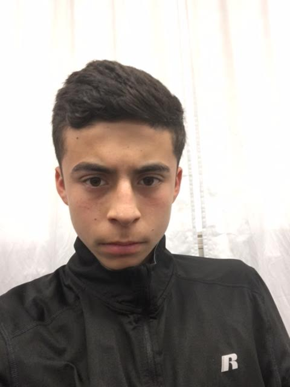

Hobbies
- I like to play soccer because its been my favoriate sport since I was five years old.
- I also enjoy hiking with my family on the holidays because I it gives me a chance to explore many new things that i've never seen before
- I have always enjoyed playing videogames with my cusions because it lets us bond more and lets us have a good time
- one of my main accomplishments was that I was the only freshmen that